1. IPv4 프로토콜의 정의 (원본 p.120)
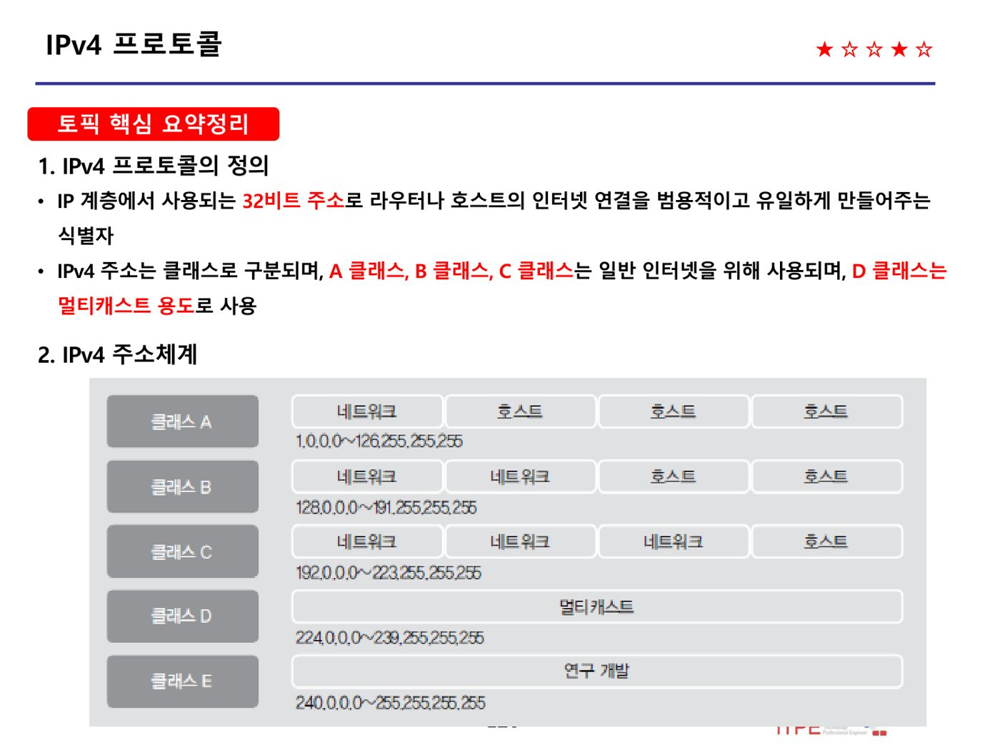
3. 사설 IP(RFC 1918) (원본 p.121-122)
▸ 원본 p.121 표: 사설 IP(RFC 1918)
| 구분 | IP 주소 범위 | 주소 개수 |
|---|---|---|
| 24비트 블록 | 10.0.0.0 ~ 10.255.255.255 | 16,777,216(A클래스 1개) |
| 20비트 블록 | 172.16.0.0 ~ 172.31.255.255 | 1,048,576(B 클래스 6개) |
| 16비트 블록 | 192.168.0.0 ~ 192.168.255.255 | 65,536(C 클래스 256개) |
1. IPv6 프로토콜의 정의 (원본 p.124)
▸ 원본 p.124 표: IPv6 프로토콜
| 필드 | 내용 |
|---|---|
| Version | • IPv6 임을 식별 |
| Traffic Class | • QoS, 패킷별 품질제어에 사용 |
| Flow Label | • QoS, 패킷별 품질제어에 사용 |
| Payload Length | • Header를 제외한 사용자 데이터 길이 표시 |
| Next Header | • 다음 헤더의 종류를 표시 |
| Hop Limit | • 패킷의 라우팅 중계 횟수 제한 |
3. IPv6 주소 종류 (원본 p.125)
▸ 원본 p.125 표: IPv6 주소 종류
| 중분류 | 소분류 | 기능 |
|---|---|---|
| Unicast | Link Local | • 단일 세그먼트 내에서 사용(FE80:…) |
| Global Unicast | • 인터넷 공인주소 | |
| Unspecified | • 시스템 부팅시 임의 주소( : : ) | |
| Loop Back | • 루프 백 주소( : : 1 ) 또는 ( 0 : 1 ) | |
| Anycast | • 인터페이스들의 집합, 패킷은 가장 가까운 인터페이스에 전달 | |
| Multicast | • 인터페이스들의 집합, 패킷은 그룹 내 모든 인터페이스에 전달 |
5. IPv6 확장헤더 구조 (원본 p.126)
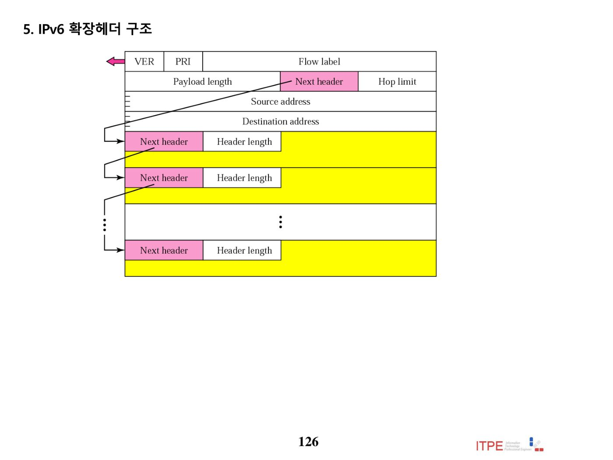
5. IPv6 확장헤더 기능 (원본 p.127-131)
▸ 원본 p.127 표: IPv6 확장헤더 기능
| 확장헤더명 | Next header 값 | 내용 |
|---|---|---|
| Hop-by-Hop options | • 패킷 전송경로상의 모든 노드가 참조하여 처리 • 옵션 타입에 따라 다양한 정보를 포함할 수 있음 | |
| Routing | • 발신자가 패킷의 중계 라우터를 지정하는데 사용 | |
| Destination options | • 목적지 주소의 노드만 참조하여 처리 • 옵션 타입에 따라 바인딩 업데이트 확인과 같은 다양한 정보를 포함할 수 있음 | |
| Fragment | • 패킷 분할 및 조합 정보 표현에 사용 | |
| Authentication | • 데이터 무결성 및 송신자 인증 정보 표현에 사용 | |
| Encapsulating Security Payload | • 패킷의 페이로드 영역의 암호화 정보 표현에 사용 |
| 코드 | 옵션 | 설명 |
|---|---|---|
| End of option | • 옵션 목록 종료 | |
| No operation | • 특별한 동작을 수행하지 않음 | |
| Loose sourceroute | • 느슨한 소스라우팅 | |
| Time stamp | • 네트워크 지연 모니터링을 위한 시간기록 | |
| Record route | • 라우팅 경로 기록 | |
| Strict source route | • 엄격한 소스 라우팅 |
1. IPv4/IPv6 전환기술의 정의 (원본 p.132)
전환기술
▸ 원본 p.132 표: IPv4/IPv6 전환기술
| 구분 | 내용 |
|---|---|
| 듀얼스택 (dual stack) | • IPv4/IPv6 듀얼스택은 IPv6 노드가 IPv4 전용노드와 호환성을 유지하는 가장 쉬운 방법 • IPv4/IPv6 듀얼스택 노드는 IPv4와 IPv6 패킷을 주고 받을 수 있는 능력이 있어, IPv4 패킷을 사용하여 IPv4 노드와 직접 호환, 또한 IPv6 패킷을 사용하여 IPv6 노드와 직접 호환됨 |
| 터널링 (tunneling) | • IPv4/IPv6 호스트와 라우터에서 IPv6 데이터그램을 IPv4 패킷에 캡슐화하여 IPv4 라우팅 토폴로지 영역을 통해 전송하는 방법 • 기존의 IPv4 라우팅 인프라를 활용하여 IPv6 트래픽을 전송하는 방법 |
| 변환 (Translation) | • 기존 네트워크와 호환성을 위해 IPv4 주소를 IPv6 주소로 나타내는 방법 |
3. IPv6 전환기술 (원본 p.133-152)
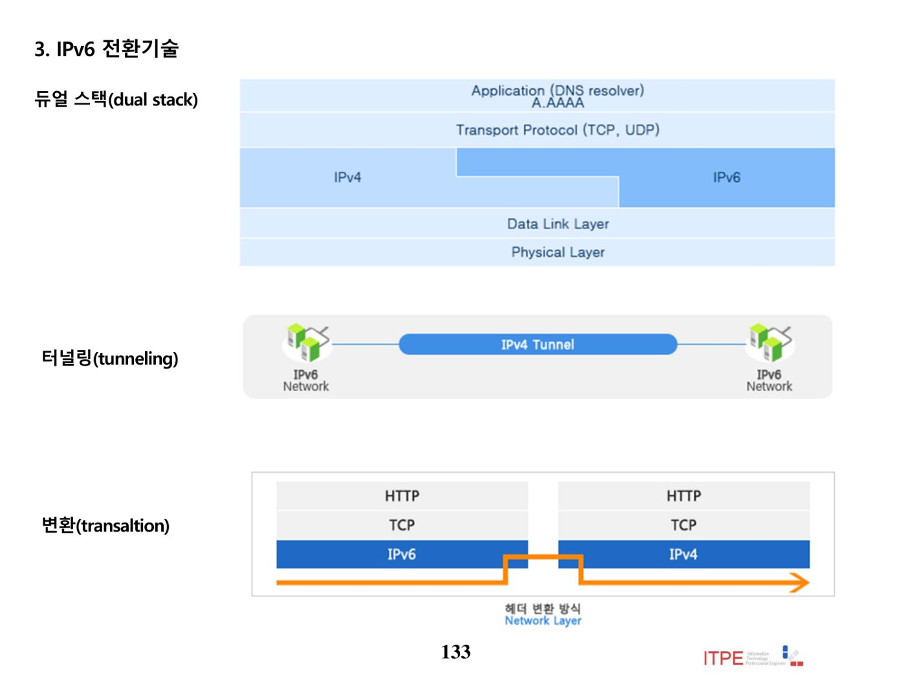
| 구분 | 내용 |
|---|---|
| 듀얼스택 (dual stack) | • IPv4/IPv6 듀얼스택은 IPv6 노드가 IPv4 전용노드와 호환성을 유지하는 가장 쉬운 방법 • IPv4/IPv6 듀얼스택 노드는 IPv4와 IPv6 패킷을 주고 받을 수 있는 능력이 있어, IPv4 패킷을 사용하여 IPv4 노드와 직접 호환, 또한 IPv6 패킷을 사용하여 IPv6 노드와 직접 호환됨 |
| 터널링 (tunneling) | • IPv4/IPv6 호스트와 라우터에서 IPv6 데이터그램을 IPv4 패킷에 캡슐화하여 IPv4 라우팅 토폴로지 영역을 통해 전송하는 방법 • 기존의 IPv4 라우팅 인프라를 활용하여 IPv6 트래픽을 전송하는 방법 |
| 변환 (Translation) | • 기존 네트워크와 호환성을 위해 IPv4 주소를 IPv6 주소로 나타내는 방법 |
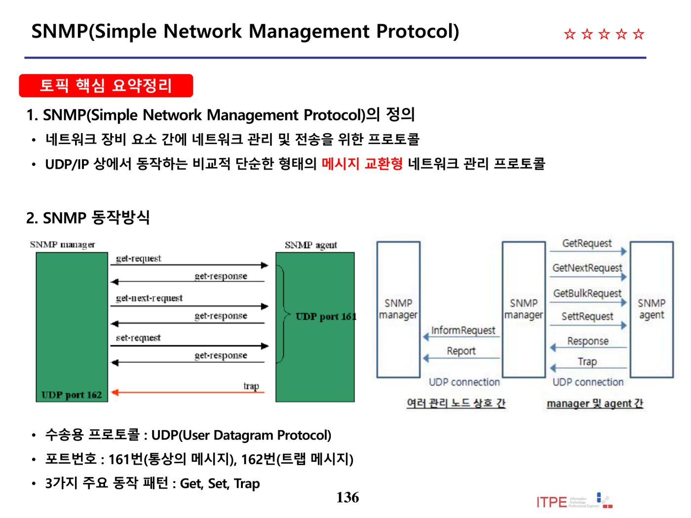
▸ 원본 p.137 표: 명령어
| 명령어 | 내용 |
|---|---|
| GetRequest | • 변수의 값을 읽기 위하여 관리자(클라이언트)가 에이전트(서버)로 보내는 메시지 |
| GetNextRequest | • 메시지에 정의된 ObjectID 바로 다음 객체의 값을 읽기 위하여 관리자가 에이전트로 보내는 메시지 |
| GetBulkRequest | • 많은 양의 데이터를 읽기 위해 보내는 메시지 |
| SetRequest | • 관리자가 변수에 값을 설정하기 위해 전송하는 메시지 |
| GetResponse | • GetRequest나 GetNextRequest에 대한 응답 |
| Trap | • 에이전트 사건을 관리자에게 보고하기 위해 전송되는 메시지 |
| Report | • 오류 유형을 보고하기 위해 사용 |
| InformRequest | • 원격 관리자의 제어 하에 있는 에이전트로부터 어떤 변수 값을 얻기 위해 한 관리자가 다른 원격 관리자에게 전송 |
▸ 원본 p.138 표: 구분
| 구분 | 프로토콜 | 내용 |
|---|---|---|
| 정보구조 | SMI | • Structure of Management Information(관리정보구조) • SNMP 관리 정보의 표현 구문 문법 등을 규정 • ‘변수작명‘, ‘변수유형‘, ‘객체 및 값들을 부호화‘ 등의 규칙 • 장비마다 다르게 표현될 수 있는 MIB 객체의 표현 동질성을 유지하는 표준 |
| MIB | • Management Information Base(관리 대상을 규격화한 정보 모음) • 관리 특성을 묘사하는 변수 객체들의 모음 | |
| 정보식별 | OID | • 트리 형태의 계층 구조(Tree Hierarchy) • 식별된 관리 정보와 관련된 값을 계층화된 데이터베이스 MIB에서 저장/유지/관리 |
▸ 원본 p.139: 라우팅 프로토콜(Routing Protocol)
1. 라우팅 프로토콜(Routing Protocol)의 정의
- Routing이란 하나의 근원지에서 목적지로 internetwork를 통해 정보를 전달하는 과정
- 대비되는 말로는 브리지(Bridge)이라는 용어가 있는데 그 개념은 비슷하나 Routing은 OSI 7 Layer에서 Network Layer(3계층)에서 일어나는 것이고, Bridge은 Datalink Layer(2계층)에서 일어나는 것이 차이점
- 라우팅 프로토콜은 라우터 간 통신방식을 규정하는 통신규약
2. 라우팅 프로토콜 유형
▸ 원본 p.140 표: 프로토콜
| 프로토콜 | 링크상태 |
|---|---|
| RIP | • Distance Vector 알고리즘을 사용하며, 라우팅 테이블은 매 30초 마다 브로드캐스팅을 통해 상호 정보 전달 • 홉(hop)수 제한(최대 16홉), VLSM(Variable Length Subnet Mask) 지원불가, Load Balancing 불가 • 네트워크 상태(대역폭, 지연시간, 부하량 등)는 고려하지 않음 |
| IGRP | • RIP의 문제점을 일부 개선한 방식(미국 시스코 사에서 RIP의 단점 보완을 위해서 개발) • 네트워크의 상태(대역폭, 지연시간, 부하량 등)를 고려 • 홉(hop)수 증가(최대 255홉), VLSM 지원불가, Load Balancing 가능 |
| OSPF | • Link State 알고리즘 사용 • 사용자 지정경로, 가장 경제적인 경로, 복수 경로 등 변화의 발생에 관한 정보가 RIP에 비해 빨리 전파 • 토폴로지에 관한 정보가 전체 라우터에서 동일하게 유지, VLSM 및 Load Balancing 가능 |
| BGP | • AS 간을 연결하는 EGP 방식, 규모가 큰 네트워크를 상호 연결 • TCP 기법을 사용하여, Path Vector 라우팅에 기반함 |
▸ 원본 p.141 표: 프로토콜
| 프로토콜 | 링크상태 |
|---|---|
| RIP | • Hop count(홉 카운트) |
| OSPF | • Link Cost(링크 비용) • 링크 대역폭, 전송속도에 기초하여 계산되고, 16비트 Metric 값(1~65,535)으로 표현 |
| IGRP, EIGRP | • Bandwidth, Delay, Load, Reliability, MTU 등 여러 가지를 조합하여 계산한 Cost가 가장 낮은 경로 |
| BGP | • 속성(Attribute)이라고 하는 네트워크 도달성(reachability) 정보 • 속성 : Next hop, weight, local preference, as path, origin type, MED 등 |
| 거리벡터 | 링크상태 |
|---|---|
| • 네트워크 토폴로지는 인접 라우터에서 라우팅 테이블 정보를 받음 | • 다른 모든 라우터에서 LSA를 받음 |
| • 인접 라우터에서 받은 라우팅 정보를 바탕으로 라우터에서 라우터까지 거리벡터 합 | • 각각의 라우터가 LSA를 모아서 자체적으로 다른 라우터까지 최소 경로 계산 |
| • 주기적인 업데이트, 수렴속도 느림 | • 이벤트에 의해 변경이 일어나고 수렵속도가 빠름 |
| • 인접 라우터에 라우팅 테이블을 복사 | • 다른 라우터에 링크상태 변경 정보 전송 |
▸ 원본 p.142 표: 라우팅 방식
| 라우팅 방식 | 내용 |
|---|---|
| 소스 라우팅 | • 송신 호스트가 경로정보를 지정하여 데이터를 전송하는 방식 |
| 분산 라우팅 | • 라우팅 정보를 여러 노드에 분산하여 관리. 호스트 수가 많을수록 효과적임 |
| 중앙 라우팅 | • 라우팅 정보를 관리하는 별도의 호스트를 구성 • 송신자는 코어 라우터(core router)로 부터 경로를 지정 받아 소스 라우팅으로 전송 • 호스트의 개수가 많아 질수록 비효율 |
| 계층 라우팅 | • 분산 라우팅 + 중앙 라우팅 • 네트워크 규모가 커질수록 매우 효과적임 |
| 라우팅 방식 | 내용 |
|---|---|
| 소스 라우팅 | • 송신 호스트가 경로정보를 지정하여 데이터를 전송하는 방식 |
| 분산 라우팅 | • 라우팅 정보를 여러 노드에 분산하여 관리. 호스트 수가 많을수록 효과적임 |
| 중앙 라우팅 | • 라우팅 정보를 관리하는 별도의 호스트를 구성 • 송신자는 코어 라우터(core router)로 부터 경로를 지정 받아 소스 라우팅으로 전송 • 호스트의 개수가 많아 질수록 비효율 |
| 계층 라우팅 | • 분산 라우팅 + 중앙 라우팅 • 네트워크 규모가 커질수록 매우 효과적임 |
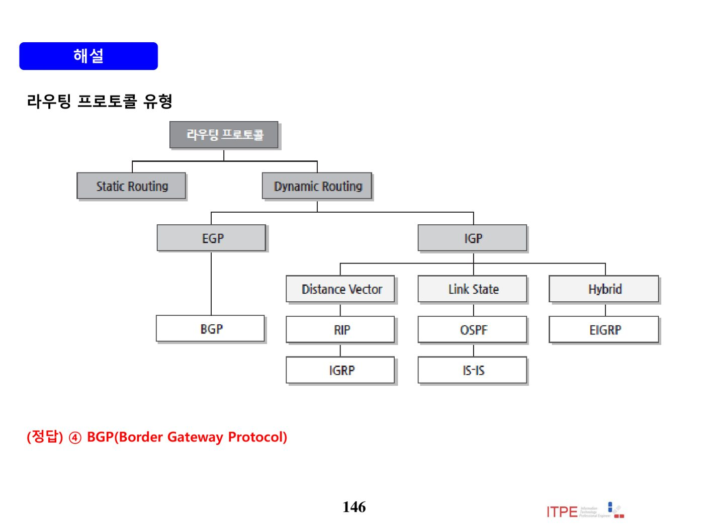
| 프로토콜 | 메트릭 |
|---|---|
| RIP | • Hop Count(홉 카운트) |
| OSPF | • Link Cost(링크 비용) • 링크 대역폭, 전송속도에 기초하여 계산되고, 16비트 Metric 값(1~65,535)으로 표현 |
| IGRP, EIGRP | • Bandwidth, Delay, Load, Reliability, MTU 등 여러 가지를 조합하여 계산한 Cost가 가장 낮은 경로 |
| BGP | • 속성(Attribute)이라고 하는 네트워크 도달성(reachability) 정보 • 속성 : Next Hop, Weight, Local Preference, AS path, Origin type, MED 등 _ _ |
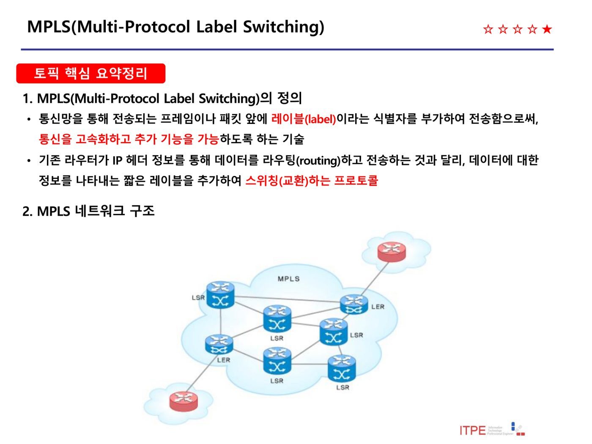
▸ 원본 p.150 표: 구분
| 구분 | 요소 | 내용 |
|---|---|---|
| 장비 | LER | • Label Edge Router, 패킷의 목적지를 분류하여 라벨(Label) 할당 및 제거를 담당하는 라우터 |
| LSR | • Label Switch Router, 라벨(Label)을 붙인 패킷이 들어오면 라벨 스위칭을 통해 패킷을 전달하는 라우터 | |
| 프로토콜 | FEC | • Forwarding Equivalence Class, 동일 경로상에서 라우팅되는 동일 서비스 등급에 속한 패킷들의 집합 |
| LSP | • Label Switched Paths, FEC에 속한 패킷이 전달되는 경로 | |
| LIB | • Label Information Base, LSR에서 LDP(Label Distribution Protocol)에 의해 생성 및 전달되어온 레이블 바인딩 정보를 저장하고 있는 데이터베이스 | |
| LDP | • Label Distribution Protocol, LSP(Label Switched Paths) 설정을 위해 LSR(Label Switch Router)들이 교환하는 메시지, 절차를 정의한 프로토콜 |
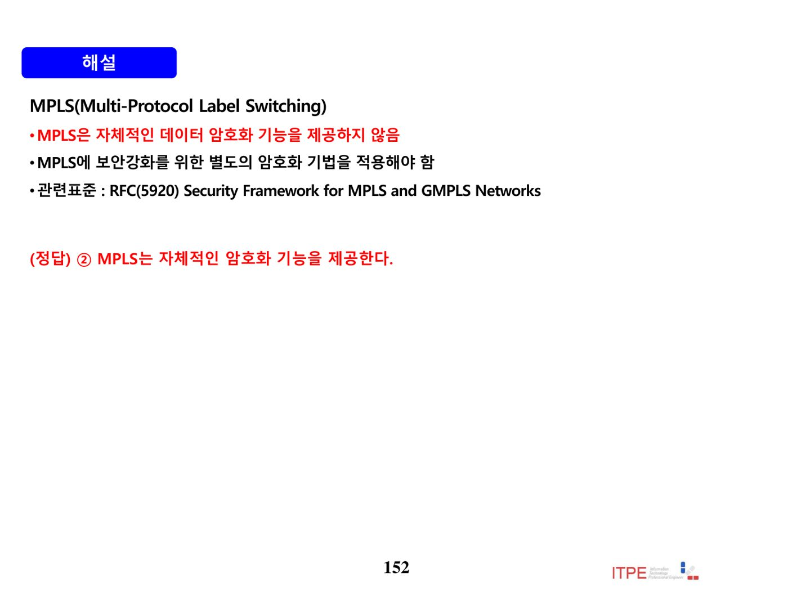
1. 모바일 IP(Mobile IP)의 정의 (원본 p.153-156)
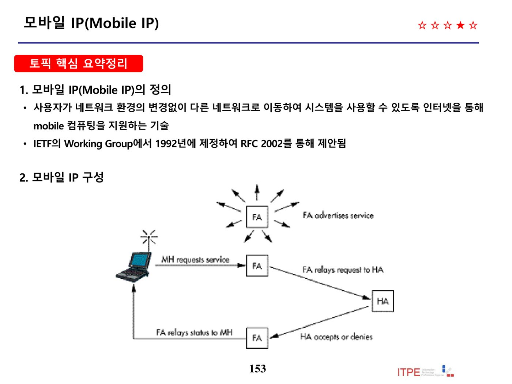
▸ 원본 p.154 표: 구분
| 구분 | 내용 |
|---|---|
| Mobile Node | • 다른 네트워크로 이동하여 서비스를 받고자 하는 PC 등 단말장비 |
| Home Agent | • Mobile node가 원래 속해 있던 네트워크의 라우터 |
| Foreign Agent | • Mobile node가 이동할 네트워크의 라우터 |
| Home Address | • Mobile node가 원래 속해 있던 네트워크에서 사용하고 있던 IP 주소 |
| Care of Address | • Mobile node가 다른 네트워크로 이동할 경우, Foreign agent로부터 받는 주소 |
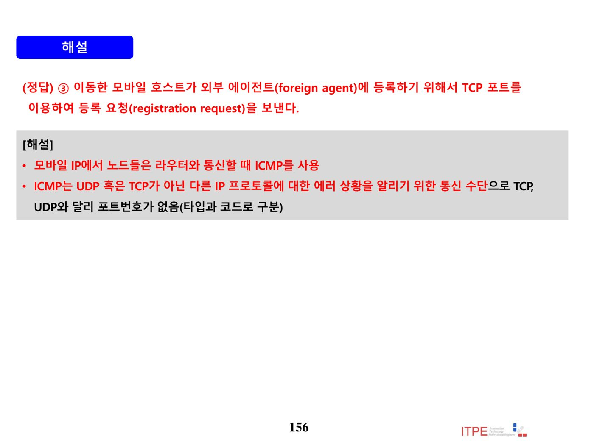
1. Mobile IPv6의 정의 (원본 p.157)
▸ 원본 p.157: Mobile IPv6
1. Mobile IPv6의 정의
- IPv6 주소를 사용하는 이동단말을 인증하는데 사용되는 IETF 이동 IP 표준(기존 IPv6에 이동성 헤더를 추가, 이를 통한 바인딩 관련 메시지 전송)
- Neighbor Discovery와 Address autoconfiguration 기능을 이용하여 이동 단말이 이동하였을 때 자동으로 자신의 위치정보를 구성할 수 있도록 하였으며, 자신의 변환 위치 정보를 필요한 노드들에게 알릴 수 있도록 destination option을 추가함으로써, IPv4에서는 존재해야만 했던 일부 시그널 메시지들과 에이전트를 제거
2. Mobile IPv6의 특징
- 무한대 주소공간
- 보안기능 : 보안기능이 프로토콜 자체 내에 포함
- 주소 자동설정 기능 : Easy to use, Always On 서비스 가능
- 라우팅 : 효율적으로 이동성 환경 제공
3. Mobile IPv6 동작방식 (원본 p.158-159)
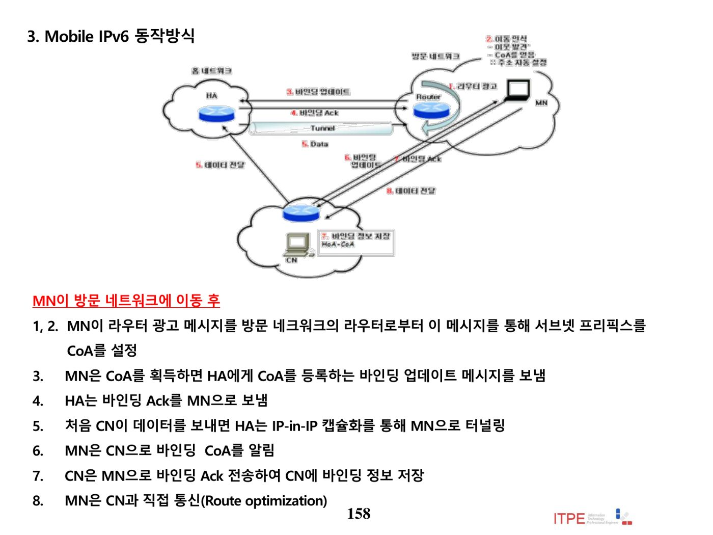
▸ 원본 p.159 표: Mobile IPv4
| Mobile IPv4 | Mobile IPv6 |
|---|---|
| • Triangle 라우팅 문제 | • Route Optimization |
| • FA 구축 | • Neighbor Discovery와 Address Auto-Config 이용 |
| • FA와의 복잡한 등록절차와 라우팅 필요 | • MN은 IP 헤더의 소스 주소에 CoA 주소를 사용하여 Ingress Filtering을 정상적으로 통과 |
| • 라우터에서 MN으로 오는 패킷에 정방향 확인만을 제공하여, 블랙홀 상태 존재 | • Mobile Discovery Mechanism 사용 |
| • 패킷은 IP 캡슐화 | • IPv6 라우팅 헤더 사용(상황에 따라 선택) |
| • ICMP 제한으로 인하여 터널 소프트 상태를 다루어야 함 | • IPv6에서는 캡슐화 및 라우팅 헤더를 사용하여 터널 소프트 상태를 사용할 필요가 없음 |
| • 모든 HA에게 브로드캐스트를 사용하여 MN의 홈 링크 상에 있는 HA부터 개별응답을 반환 | • Dynamic Home Agent Discovery Mechanism 사용 |
| • 모든 제어 메시지에 대해 각각의 개별적인 UDP 패킷이 필요 | • IPv6 Destination 옵션 사용 |
1. 프로토콜 계층구조 (원본 p.160-168)
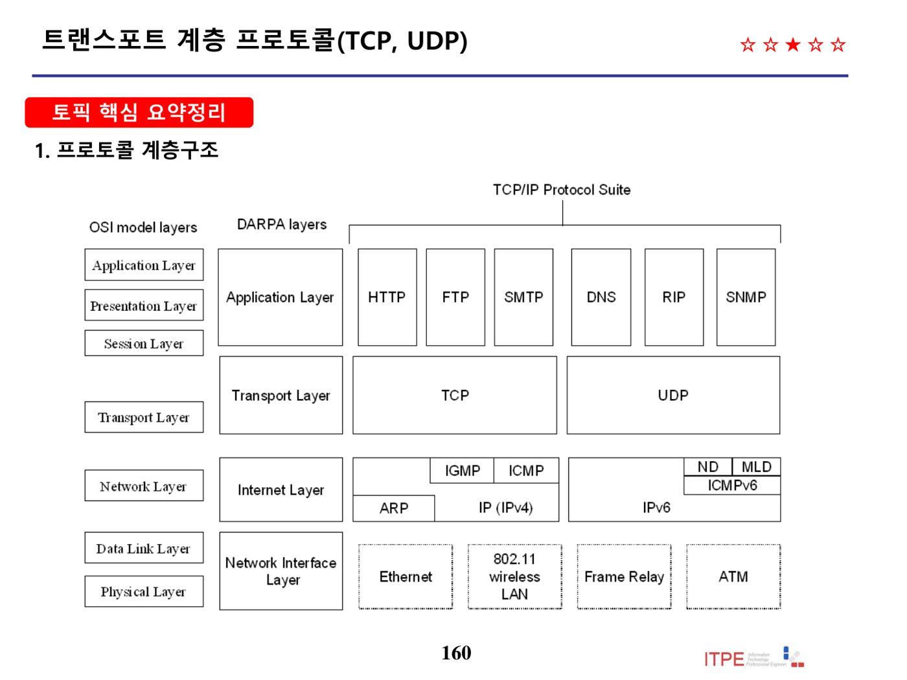
▸ 원본 p.161 표: 비교항목
| 비교항목 | TCP | UDP |
|---|---|---|
| 데이터 순서 | • 순서 유지함 | • 순서 유지하지 않음 |
| 데이터 중복 | • 데이터 중복, 손실 없음 | • 데이터 중복, 손실 가능 |
| 에러 제어 | • 헤더 및 데이터에 대한 에러 검사 후 에러시 재전송 | • 헤더 및 데이터에 대한 에러 검사 후 에러시 재전송하지 않음 |
| 흐름제어 | • 슬라이딩 윈도우 사용 | • 흐름제어 없음 |
| 식별 대상 | 식별 정보 |
|---|---|
| • 프로세스, 응용 어플리케이션 식별 | • Port 번호 |
| • 동일 네트워크 구간 내부 노드 간 식별 | • MAC 주소 |
| • 단일 노드(서버, PC 등) 간 식별 | • IP 주소 |
| • 백본망/라우터 간 영역 식별 | • AS(Autonomous System, 자율시스템) |
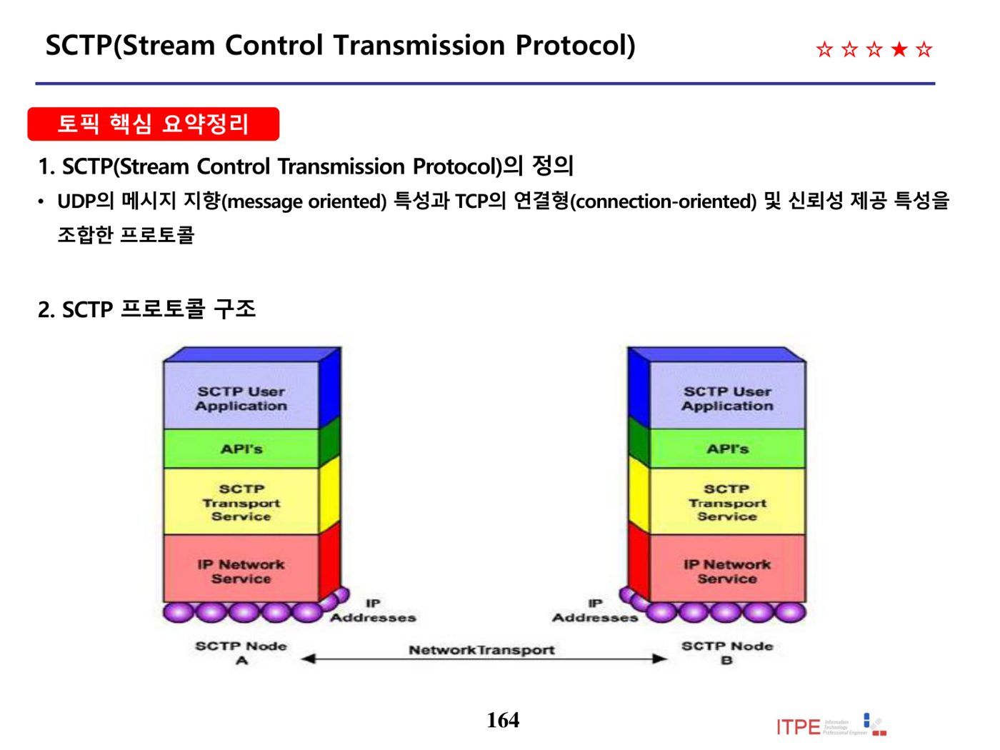
▸ 원본 p.165 표: 주요기능
| 주요기능 | 내용 |
|---|---|
| 멀티 호밍 | • 1 세션 당 다중 IP, 동적인 Path를 사용하여 연결 |
| 멀티 스트리밍 | • Stream 별 독립적 순서화, 스트림 ID별 데이터 복구, 재전송 기능 |
| 4 way handshaking | • DOS 공격, TCP SYN 공격 방지 기능, Verification, Cookie 값 사용 |
| 3 way handshaking | • TCP Half-Open 문제 해결, 데이터 전송경로의 통합적 수행 |
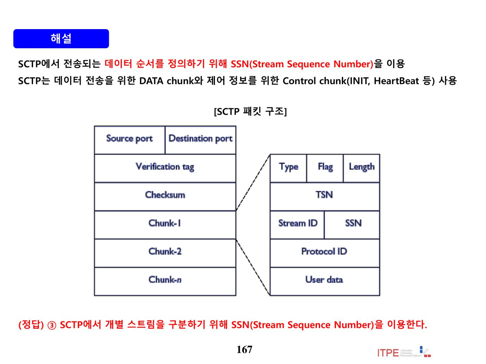
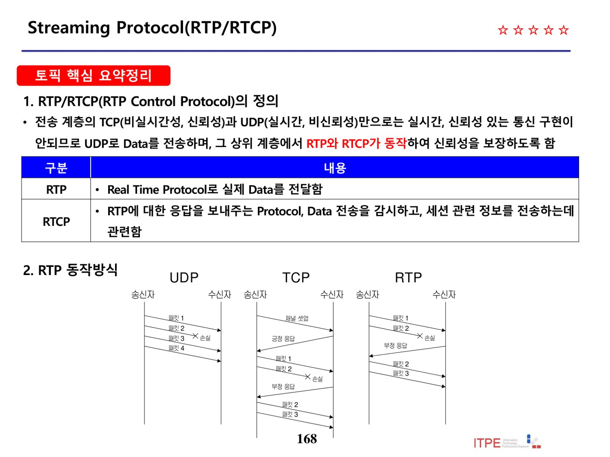
2. ICMP 계층 위치 (원본 p.169)
ICMP(Internet Control Message Protocol)의 정의
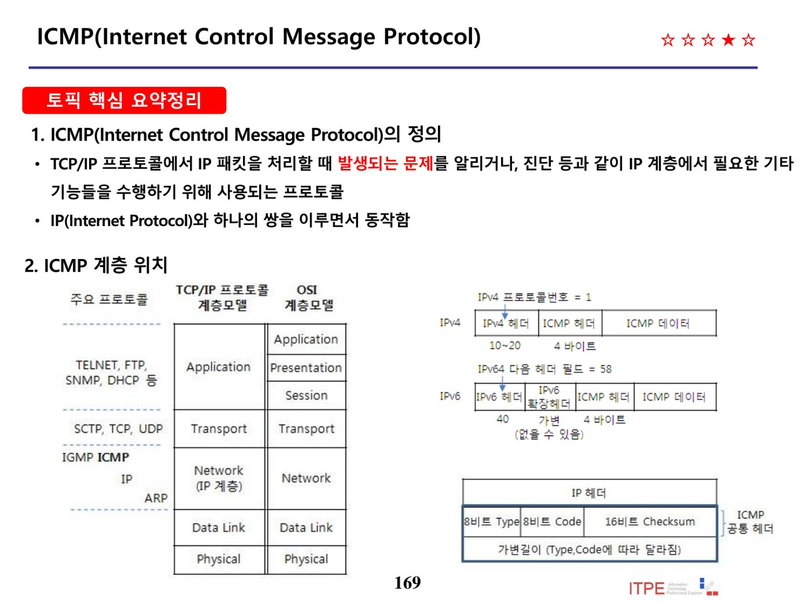
4. ICMP 질의 메시지 (원본 p.170)
▸ 원본 p.170 표: BAM
| 메시지 | 내용 |
|---|---|
| Destination Unreachable | • 도달할 수 없는 목적지에 계속하여 패킷을 보내지 않도록 송신측에 주의를 주는 역할 |
| Source Quench | • 폭주가 발생한 상황을 송신측에 알려서 송신측이 전송을 잠시 중단하거나 전송률을 줄이는 등의 조치를 취하도록 알리는 역할 |
| Redirection | • 송신측으로부터 패킷을 수신 받은 라우터가 특정 목적지로 가는 더 짧은 경로가 있음을 알리고자 할 때 사용 |
| Time Exceeded | • Time to Live Exceed in Transit • Fragment Reassembly Time Exceeded |
| 메시지 | 내용 |
|---|---|
| Echo Request and reply | • Ping 명령어는 이 두개를 조합하여 활용 |
| Neighbor Discovery Message | • Neighbor Solicitation message : 동일 링크 상에 있는 다른 호스트의 링크 주소 정보 제공 • Neighbor advertisement message : solicitation message에 응답하여 보내지는 메시지 |
| Address Mask Request and Reply | • 디스크가 없는 diskless 시스템이 부팅할 때 자신의 서브넷 마스크를 얻기 위해서 사용 |
6. ICMPv4와 ICMPv6 메시지 비교 (원본 p.171-177)
▸ 원본 p.171 표: BAM
| 번호 | 메시지 | 내용 |
|---|---|---|
| Destination Unreachable Error | • 패킷이 목적노드에 도달할 수 없는 경우 | |
| Packet Too Big Error | • 링크의 MTU보다 패킷이 큰 경우 | |
| Time Exceed Error | • Hop limit = 0인 패킷 수신/처리 | |
| Parameter Problem Error | • 패킷 헤더 문제 발견 |
| 메시지 | IPv4 | IPv6 | 비고 |
|---|---|---|---|
| Echo request and reply | ○ | ○ | |
| Timestamp request and reply | ○ | X | • 사용되지 않는 기능으로 삭제 |
| Address mask request and reply | ○ | X | • 사용되지 않는 기능으로 삭제 |
| Router solicitation | ○ | ○ | |
| Neighbor solicitation | ARP | ○ | • ICMPv6 기능으로 통합 |
| Group membership | IGMP | ○ | • ICMPv6 기능으로 통합 |
| Destination unreachable | ○ | ○ | |
| Source quench(socket buffer full 표시) | ○ | X | • 사용되지 않는 기능으로 삭제 |
| Packet too big | X | ○ | • 링크의 MTU보다 패킷이 큰 경우 |
| Time exceeded | ○ | ○ | |
| Parameter problem | ○ | ○ | |
| Redirection | ○ 1 | 71 ○ |
| 번호 | 메시지 | 내용 |
|---|---|---|
| Destination Unreachable Error | • 패킷이 목적노드에 도달할 수 없는 경우 | |
| Packet Too Big Error | • 링크의 MTU보다 패킷이 큰 경우 | |
| Time Exceed Error | • Hop limit = 0인 패킷 수신/처리 | |
| Parameter Problem Error | • 패킷 헤더 문제 발견 |
▸ 원본 p.174 표: 인터넷 프로토콜(Internet Protocol)
| 구분 | 내용 |
|---|---|
| RARP | • RARP는 자료를 전송하려 하는 상대방 혹은 자신의 하드웨어 주소인 MAC Address를 알고 IP를 모를 경우 사용하는 프로토콜임 • 48비트 MAC 주소로부터 그 장비의 32비트 IP주소를 알아내는 프로토콜이며, 역으로 IP로 MAC 주소를 찾는 프로토콜은 ARP임 |
| BOOTP | • 하드 디스크가 없는 장치의 설정정보를 자동으로 할당, 관리하기 위해 개발된 통신규약 • TCP/IP 환경의 클라이언트/서버 시스템에서 디스크를 갖지 않는 클라이언트가 시스템의 기동(boot)에 필요한 컴퓨터 IP 주소, 컴퓨터 서브넷 마스크, 라우터 IP 주소, 네임서버 IP주소를 서버로부터 자동적으로 받는 규약임. 클라이언트가 자신의 IP 주소를 모르는 경우 RARP를 통해 IP를 찾아냄 |
| DHCP | • IP주소를 동적으로 배포할 서버 및 클라이언트 구성정보를 정의하는 표준 프로토콜 • DHCP 서버는 IP주소, 서브넷 마스크, 기본 게이트웨이 정보를 클라이언트에 제공 |
| HDLC | • 비트 중심 프로토콜(문자중심 프로토콜에 비해 더 많은 정보를 고속 전송)의 대표적 통신 프로토콜로 시작플래그, 주소필드, 제어필드, 정보필드, 프레임오류검사 필드, 프레임 종료 플래그로 구성된 프레임으로 구성 174 |
▸ 원본 p.175: VoIP(Voice over Internet Protocol)
- 일반 전호번호 또는 e-mail 주소 형태의 식별자를 이용하여 언제, 어디서나, 단말기에 관계없이 양 단말간 VoIP 서비스를 제공하기 위한 호 설정용 인터넷 표준 프로토콜
- 텍스트 형태로 구성되어 개발이 쉽고, 웹 프로토콜인 HTTP와 호환되며, 기존 인터넷 서비스를 그대로 수용할 수 있고, 응용 서버(application server)를 위한 일반 응용 서비스의 컴포넌트로 구성될 수 있으므로 모든 새로운 서비스 확장이 용이함 구분 SIP H.323 구조
- 구성요소(element)
- 스택 표준기구
- IETF
- ITU 회의제어
- 표준화 진행 중
- 지원 프로토콜
- UDP 기반
- TCP 기반 인코딩
- HTTP 유사
- ASN.1 Q931 주안점
- 멀티미디어, 멀티캐스트, 이벤트
- 전화 주소
- 평면 alias, E.164, 이메일
- SIP URL, E.164 URL
1. SIP(Session Initiation Protocol)의 정의
2. SIP vs. H.323
▸ 원본 p.177 표: 데이터 통신(Data Communication)
| 구분 | 내용 |
|---|---|
| 패킷 교환 | • 패킷이라고 불리는 적은 데이터 단위가 각 패킷에 담긴 목적지 주소를 기반으로 하여 네트워크를 통해 발송되는 네트워크의 한 형태 |
| 데이터 그램방식 | • 패킷 전송방법에 따라 패킷마다 가는 경로가 다를 수 있고, 네트워크 상황에 따라 달라지며, 패킷의 도착순서가 바뀔 수 있어 순서의 재조정이 필요 |
| 가상 회선방식 | • 관련된 패킷을 모두 같은 경로를 통해 전송하는 방법 • 가상 번호를 기반으로 가상 회선을 구현, call setup이 필요함 |
| 회선교환 | • 발신자와 수신자 간에 독립적이며 동시에 폐쇄적인 통신 연결로 구성되어 있으며 이러한 1대 1연결을 회선(circuit) 또는 채널(channel)이라고 함 |
1. 스위치(Switch)의 정의 (원본 p.178)
▸ 원본 p.178 표: 스위치(Switch) 장비
| 구분 | 내용 |
|---|---|
| Server Load Balancing | • 여러 대의 서버를 하나의 서버처럼 동작시킴, 성능 확장용이, 신뢰성 향상가능 |
| Cache redirection | • 내부 망에서 외부 인터넷으로 향하는 웹 트래픽을 가로채어 캐싱 서버에게 전달 |
| Firewall Load Balancing | • 하나 이상의 방화벽을 추가하여 가용성 및 성능 향상 |
| VPN Load balancing | • VPN의 성능과 안정성을 향상 시키기 위한 기능 |
| Network Load Balancing | • 다수의 인터넷 접속 라인을 사용하여 네트워크의 속도와 안정성 개선 |
3. L7 스위치 (원본 p.179-182)
▸ 원본 p.179 표: BAM
| 구분 | 내용 |
|---|---|
| L2 | • Input 포트를 통해 들어온 Frame을 목적지 MAC 주소를 기반으로 output 포트를 통해 전송 • Switching 장비 전체가 “Broadcast Domain”이 됨 |
| L3 | • Layer 3 switching = Layer 2 switching + Layer 3 routing • Switch 장비 플랫폼에 라우팅 기능 부가 |
| L4 | • OSI 7 Layer 모델의 4계층 정보인 TCP/UDP 포트 번호를 분석해 포워딩 결정을 내리는 기능 • QoS, SLB, FLB 등의 기능 제공 |
| L7 | • 기존 Port 뿐만 아니라 실제 데이터 페이로드(Layer 7)를 이용한 다양한 패킷 스위칭을 수행하는 네트워크 장비 • Connection Pooling, Traffic Compression, QoS, 보안기능 제공 |
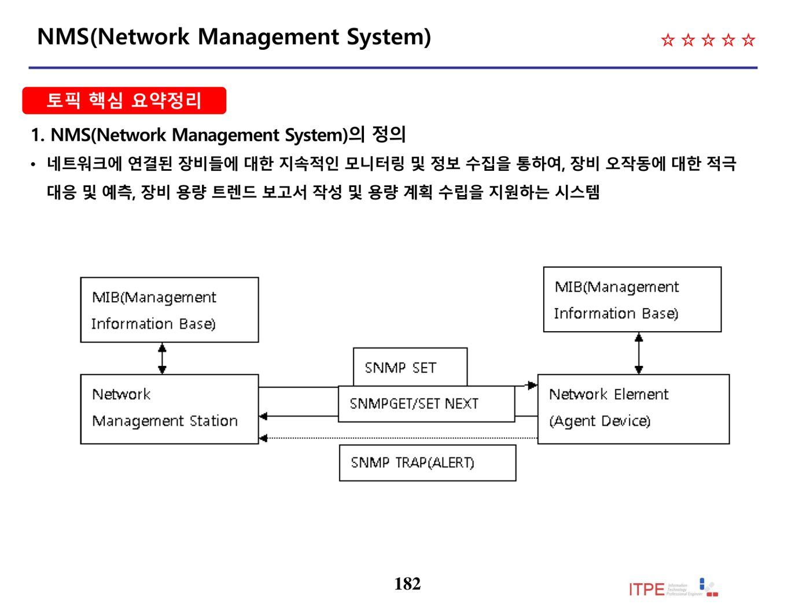
2. SNMP 명령어 (원본 p.183-184)
▸ 원본 p.183 표: SNMP 명령어
| 구분 | 내용 |
|---|---|
| GET | • Agent 관리 정보 조회 요청 후 Agent는 이에 응답 |
| GET-NEXT | • 정보의 끝을 만날 때까지 변수 값을 Manager가 Agent로 부터 가져오는 서비스 |
| SET | • Manager가 Agent 정보를 변경시키는 서비스 |
| TRAP | • Agent가 비정상시 이를 Manager에 자동 통보하는 서비스 |
| 구분 | 내용 |
|---|---|
| DDNS | • 유동 IP 주소를 사용하는 컴퓨터들의 경우에도 DNS 정보를 쉽게 유지하는 방법 • 일반적으로 인터넷 서비스 제공사업자에 의해 IP주소가 새로이 부여될 때마다 DNS 데이터베이스를 자동으로 갱신해 주어 특정 도메인 이름에 대응되는 IP주소가 자주 변경되더라도 다른 사용자들이 그 컴퓨터에 접속하기 위해 새로 변경된 IP주소를 알 필요 없이 기존 도메인 이름을 이용해 쉽게 접속 |
| DHCP | • 네트워크 관리자들이 조직 내의 네트워크 상에서 IP주소를 중앙에서 관리하고 할당해 줄 수 있도록 해주는 프로토콜, 네트워크 IP 관리 프로토콜인 BOOTP의 대안으로 사용 |
| NAT | • Network Address Translation은 1개의 공인 IP 주소에 다량의 가상 사설 IP주소를 교대로 할당 및 매핑하는 주소 변환(Address Translation) 방식 • 주소변환을 통해 내부 사설망 보안 및 Load Balancing 등이 가능 |
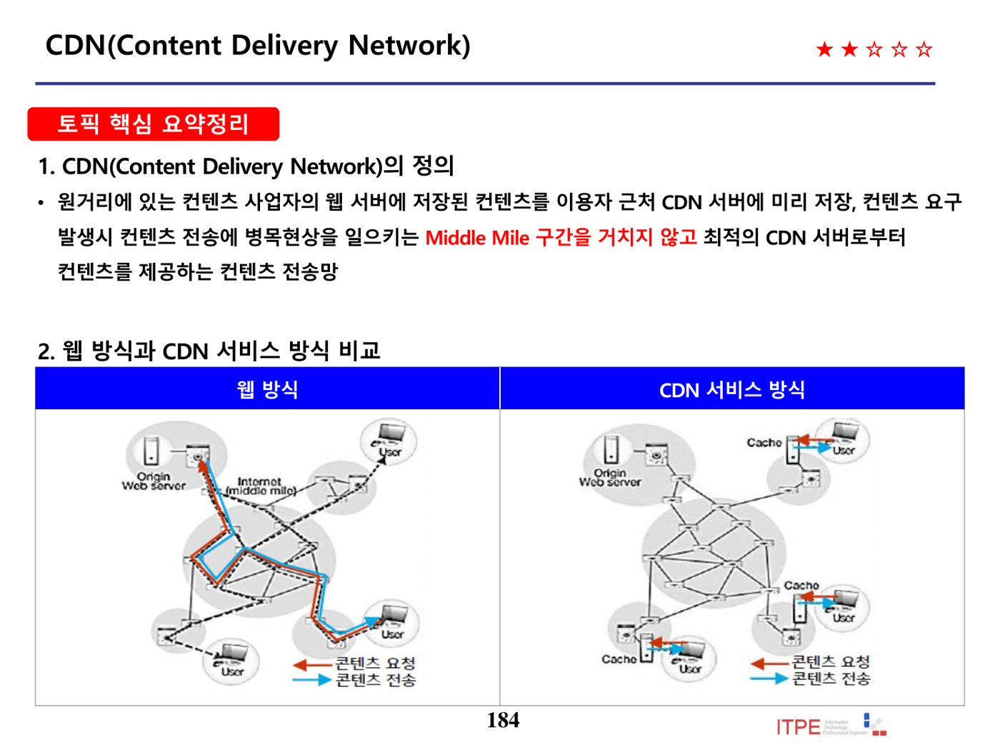
3. 구성요소 (원본 p.185-190)
▸ 원본 p.185 표: BAM
| 구성요소 | 내용 |
|---|---|
| 캐시 서버 | • 인터넷 서비스 이용자의 요청에 근원 서버로부터 컨텐츠를 받아 서비스를 제공 |
| 웹 스위치 | • 캐시 서버의 상태 정보를 주기적으로 컨텐츠 라우터에 전송하여 컨텐츠 라우터가 캐시 서버의 현 상태를 파악할 수 있도록 도와줌 |
| 컨텐츠 라우터 | • 사용자의 컨텐츠 요청이 있을 경우, 인터넷 사용자들의 물리적 위치와 링크 상태를 고려하여 가장 적당한 캐시 서버에서 컨텐츠를 전송 |
| 기술요소 | 내용 |
|---|---|
| GLB | • Global Load Balancing • 여러 곳에 비치된 인터넷 서버들 중에서 이용자에게 최상의 서비스를 제공할 수 있는 서버를 선정해 서비스를 연결하는 기술 |
| 동기화 | • Synchronization • 컨텐츠 변경 시 ISP별로 분산된 서버 Farm에 이를 즉각적으로 반영하여 사용자들이 동시에 같은 내용의 컨텐츠를 전송 받을 수 있도록 하는 기술 |
| Grid Delivery 분산 | • 컨텐츠를 전송할 때 이용자의 컴퓨터를 각각 작은 서버로 활용, 이용자가 컨텐츠를 다운로드 하면서 다른 이용자에게 컨텐츠를 전송하도록 하여, 이용자가 컨텐츠의 이용자인 동시에 전송자가 됨 |
| 구분 | 내용 |
|---|---|
| USN | • Ubiquitous Sensor Network • 필요한 모든 사물에 전자태크를 부착해 사물과 환경을 인식하고 네트워크를 통해 실시간 정보를 구축, 활용토록하는 통신망 |
| CDN | • Content Delivery Network • 원거리에 있는 컨텐츠 사업자의 웹 서버에 저장된 컨텐츠를 이용자 근처 CDN 서버에 미리 저장, 컨텐츠 요구 발생시 컨텐츠 전송에 병목현상을 일으키는 Middle Mile 구간을 거치지 않고 최적의 CDN 서버로부터 컨텐츠를 제공하는 컨텐츠 전송망 |
| CCN | • Content Centric Networking • 현 인터넷의 근본적 취약점인 호스트 중심의 구조에서 벗어나 콘텐츠를 중심으로 하는 새로운 네트워킹 아키텍처 |
| SDN | • Software Defined Network • 소프트웨어 프로그래밍을 통해 네트워크 경로 설정과 제어 및 복잡한 운용관리를 편리하게 처리할 수 있는 차세대 네트워킹 기술 |
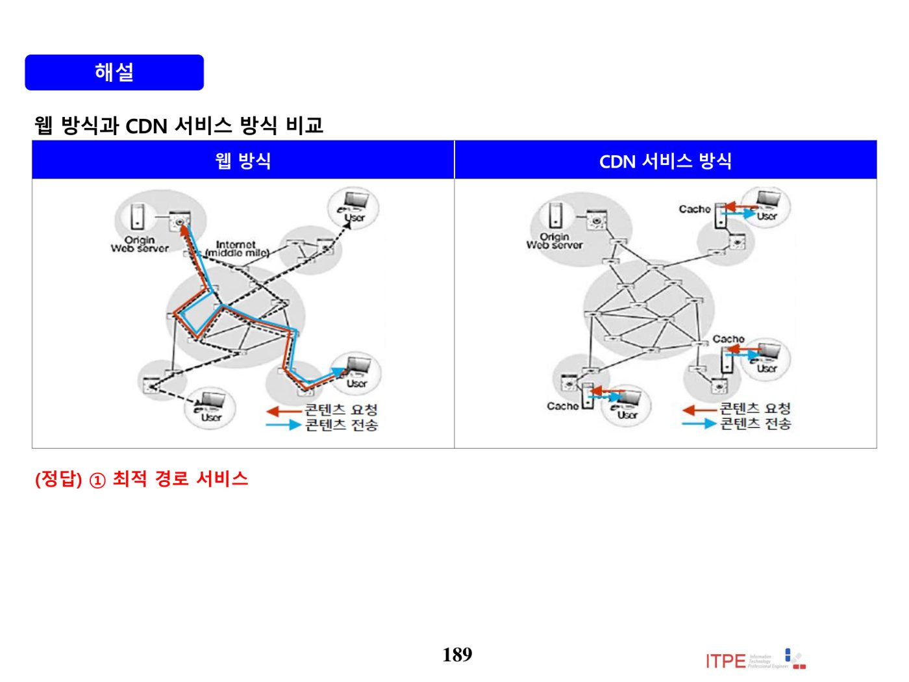
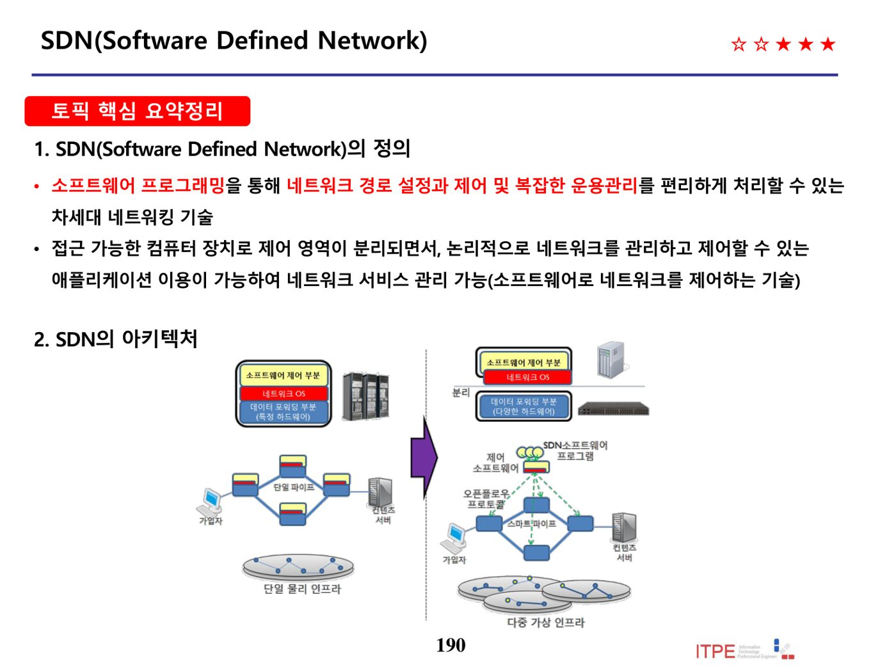
3. SDN 개방형 인터페이스 분류 (원본 p.191)
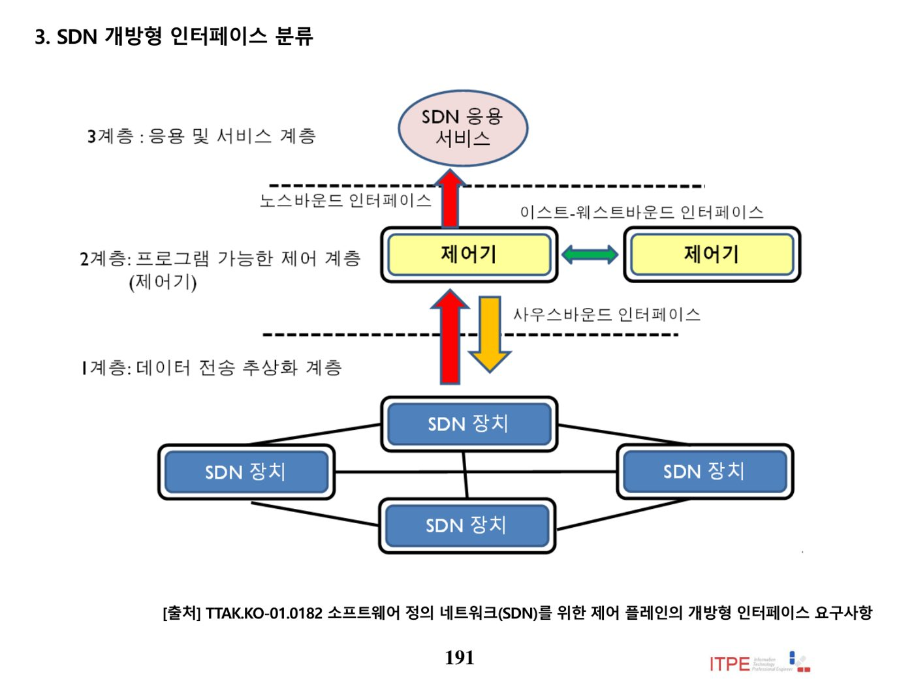
5. 인터페이스 후보 기술 (원본 p.192)
▸ 원본 p.192 표: 인터페이스 후보 기술
| 구분 | 내용 |
|---|---|
| 사우스 바운드 인터페이스 | • SDN을 구성하는 데이터 전송장치와 제어기에서, 제어부분과 데이터 전송부분 간의 인터페이스 |
| 노스 바운드 인터페이스 | • SDN을 구성하는 제어기와 응용에서의 제어부분과 응용간의 인터페이스로서, 데이터 전송장치로부터 제어기에서 필요한 정보를 수집하기 위한 인터페이스 |
| 이스트 웨스트 바운드 인터페이스 | • SDN 네트워크를 구성하는 다중 제어기 간의 인터페이스 |
| 구분 | 내용 |
|---|---|
| 사우스 바운드 인터페이스 | • 오픈플로우(ONF 표준), FORCES(Forwarding and Control Element Separation), MPLS(Multiprotocol Label Switching), PCE(Path Computation Element), IPSec, L2/L3 VPN, TRILL(Transparent Interconnection of Lots of Links), SPB(Shortest Path Bridging), Diffserv, NETCONF(Network Configuration), CLI(Command Line Interfaces), SNMP(Simple Network Management Protocol) |
| 노스 바운드 인터페이스 | • ALTO(Application Layer Traffic Optimization), XMPP(Extensible Messaging and Presence Protocol), CDNI(Content Delivery Network Interconnection), IRS(Interface to the Routing System) |
7. 오픈 플로우(OpenFlow) (원본 p.193-198)
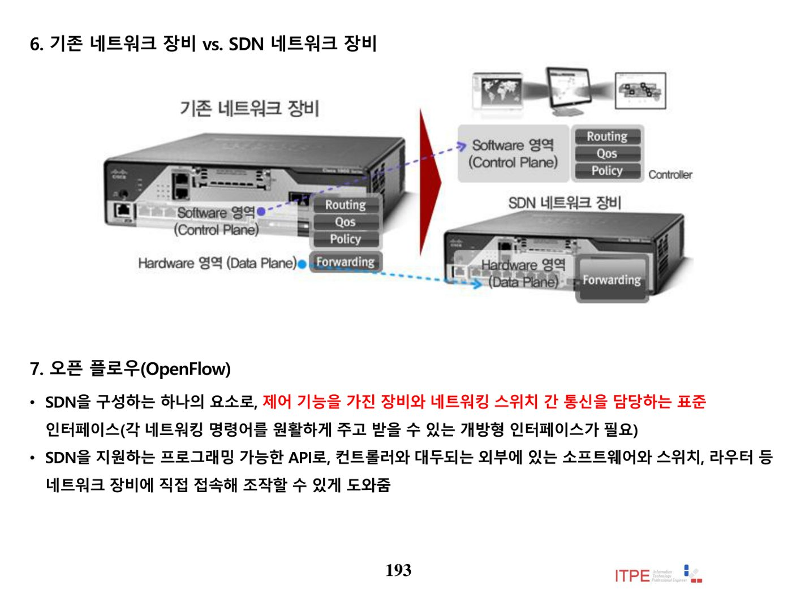
| 구분 | 내용 |
|---|---|
| 사우스 바운드 인터페이스 | • 오픈플로우(ONF 표준), FORCES(Forwarding and Control Element Separation), MPLS(Multiprotocol Label Switching), PCE(Path Computation Element), IPSec, L2/L3 VPN, TRILL(Transparent Interconnection of Lots of Links), SPB(Shortest Path Bridging), Diffserv, NETCONF(Network Configuration), CLI(Command Line Interfaces), SNMP(Simple Network Management Protocol) |
| 노스 바운드 인터페이스 | • ALTO(Application Layer Traffic Optimization), XMPP(Extensible Messaging and Presence Protocol), CDNI(Content Delivery Network Interconnection), IRS(Interface to the Routing System) |
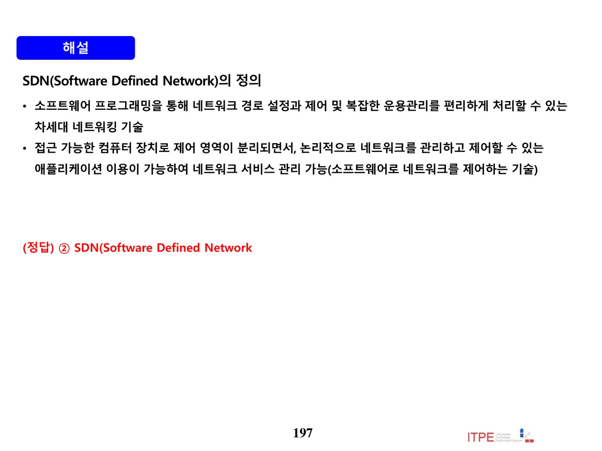
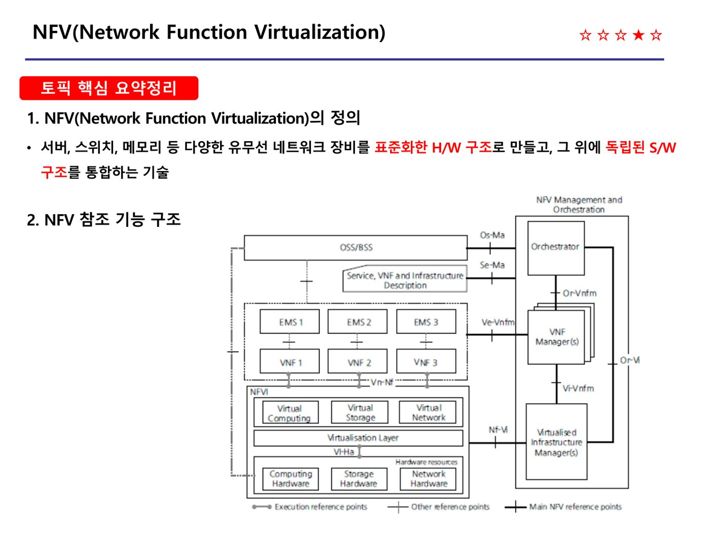
3. NFV 구성요소 (원본 p.199)
▸ 원본 p.199 표: NFV 구성요소
| 구분 | 구성 | 설명 |
|---|---|---|
| 핵심 요소 기술 | NFVI (NFV Infrastructure) | • 가상 네트워크 기능을 수행하는데 필요 • COTS 범용 하드웨어와 가속기능 및 하드웨어 가상화에 필요한 소프트웨어 계층으로 구성됨 |
| VNF (Virtual Network Function) | • NFVI 상에서 실행될 수 있는 네트워크 기능을 구현한 소프트웨어 • EMS(Element Management System) 내포 | |
| NFV M&I (NFV Management & Orchestration) | • NFVI의 물리 및 가상 자원과 VNF의 조율 및 라이프 사이클 관리를 담당 • OSS(Operation Support System)/BSS(Business Support System)와 연동하여 기존 환경의 전반적인 관리가 가능 | |
| 서비스 활용 기술 | NFVIaaS (NFVI as a Service) | • 클라우드 컴퓨팅 서비스 모델 중 IaaS(Infrastructure as a Service)와 NaaS(Network as a Service)를 결합한 형태 • NFVI의 컴퓨팅(서버, 저장공간) 자원과 네트워크 자원을 고객의 요구에 맞게 인프라 자원으로 제공 |
3. NFV 구성요소(계속) (원본 p.200-202)
▸ 원본 p.200 표: NFV 구성요소(계속)
| 구분 | 구성 | 설명 |
|---|---|---|
| 서비스 활용 기술 | VNFaaS (VNF as a Service) | • 전용 장비로 제공되던 네트워크 기능을 가상화하여 VNF 형태로 서비스를 제공함으로써 고객의 CAPEX/OPEX를 동시에 절감해 주는 효과 • VNF로 가상화가 가능한 네트워크 기능의 대상으로는 엔터프라이즈 엑세스 라우터, 엔터프라이즈 CPE, PE(Provider Edge Router) 등이 있음 |
| VNPaaS(Virtual Network Platform as a Service) | • VNFaaS는 하나의 특정 VNF를 제공하는데 반해 VNPaaS는 다수개의 VNF를 연결하는 가상 네트워크 전체를 제공 |
📚 기출·예상문제 (18문항) — 원문 수록
본 편(IP 네트워크·라우팅·SDN/NFV)에 해당하는 원본 페이지 범위의 기출·예상문제를 정리했습니다. 정답·해설은 강의 원문 기준입니다.
이 기술은 서로 다른 네트워크 A와 B의 중간에 위치한 네트워크 C에서, 네트워크 A와 B의 네트워크 계층 프로토콜을 지원하지 않을 경우 각각의 네트워크 A와 B에 있는 두 호스트 간에 서로 데이터를 교 환할 수 있도록 IP 데이터그램 안에 다른 IP 데이터그램을 넣어주는 기술이다. 가령, 두 개의 서로 다른 IPv6 네트워크 사이에 IPv4 네트워크가 존재하더라도 이 기술을 활용하면 IPv4 네트워크를 통해 IPv6 패킷 전송이 가능하므로 각각의 IPv6 네트워크에 존재하는 두 호스트 간에 IPv6 패킷통신이 가능해진 다. (원본 p.134)
라우터, 스위치와 같은 네트워크 장치의 제어부분을 데이터 전송 부분과 분리하고, 네트워크 장치의 기능을 정의할 수 있는 개방형 인터페이스를 외부에 제공하여 이를 통해 다양한 네트워크 경로 설정 및 제어, 관리 등을 할 수 있도록 하는 네트워크 기술로서 이 네트워크 기술의 가장 중요한 특징으로는 제어 평면과 데이터 평면의 분리, 프로그램 가능한 제어 평면을 위한 개방형 인터페이스, 하부 인프라 네트워크 가상화 지원 기능 등이 있다. (원본 p.196)
( ㉮ )는(은) 네트워크의 제어부와 전달부를 분리하고 제어부의 소프트웨어와 전달부 하드웨어 사이에 개방형 인터페이스를 정의하여, 운영자는 제어부를 프로그래밍하여 원하는 방식으로 제어하는 기술이 며, ( ㉯ )는(은) 방화벽(Firewall), 네트워크 주소 변환(NAT), 부하분산기(load balancer) 등의 하드웨 어 장비를 소프트웨어화하여 범용 하드웨어 장비에 설치하는 기술이다. ㉮ ㉯ (원본 p.201)